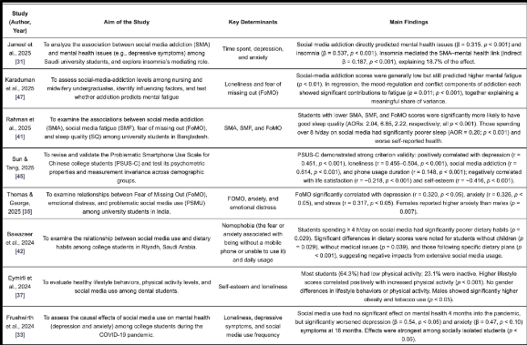

Social media addiction can lead to:
- Increased anxiety
- Increased depression
- Low self-esteem
- Emotional dysregulation
- High stress levels
- Decreased self control
A review of multiple studies regarding social media addiction and college students
found that acts of psychological distress such as symptoms of anxiety and depression
are shown to be both a cause and effect of heavy social media use.
- All 22 studies reviewed support a link between social media addiction and an increase in mental illnesses.

A Scoping Review of the Use and Determinants of Social Media Among College Students —
Summary of key determinants